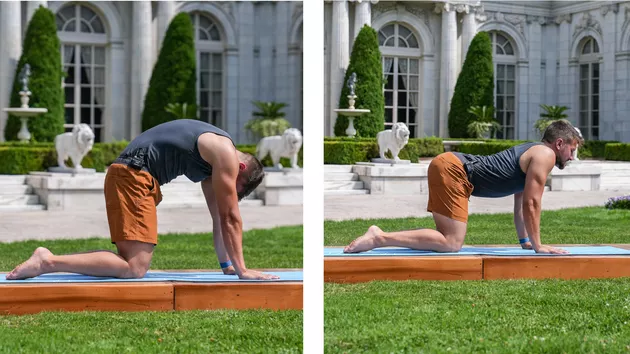
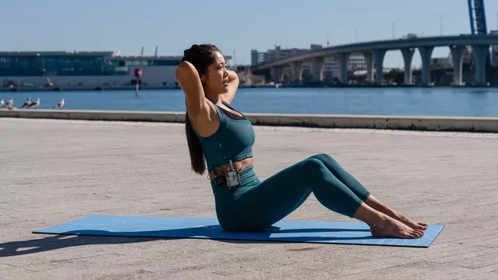
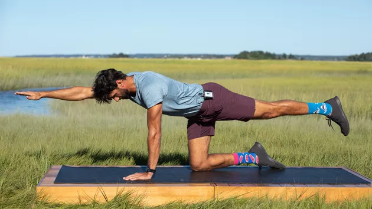
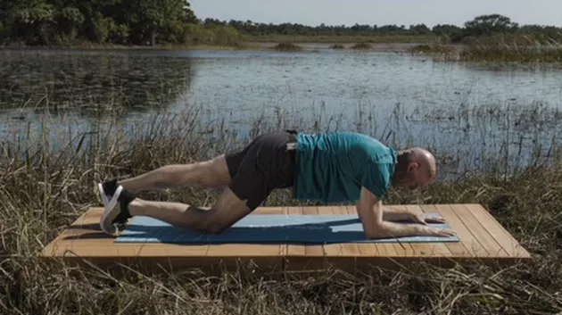
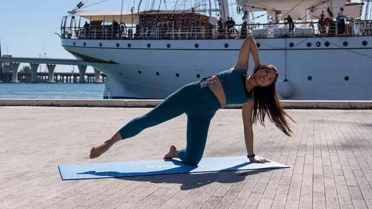

Much of our everyday back pain comes from what happens outside the gym. When you sit for too long at work or in the car, your abdominal muscles aren't engaged as much as when you're standing or on the move.
"If your core is weak, your back muscles take on more of the workload in keeping you upright and moving about your day," says Peter Donohoe, CSCS, two-time Olympian and Hydrow coach. "But when abdominal muscles are strong, your back is better supported and can function more freely without compensating to make up for a weak core."
Simply adding more crunches isn't enough to keep your back pain-free, though. "It's important to prepare the body with mobility and flexibility movements prior to performing a strength-training workout as well as endurance work," Donohoe says.
He suggests adding flexibility and balance exercises to every workout to put your body in proper alignment in preparation for the added load. A July 2020 study in The Tohoku Journal of Experimental Medicine found that performing core exercises and hip stretches just three to four days a week reduced pain and improved physical function, balance and activity levels in people with lower back issues.
Try This 10-Minute Ab Workout for Back Pain
1. Cat-Cow
Duration: 1 min
Focus: Abs & Back
- Begin on all fours with hands under your shoulders and knees under your hips.
- Exhale as you round your back upward, pulling your bellybutton toward your spine and tucking your chin toward your chest.
- On an inhale, drop your belly toward the floor as you arch your back.
- Continue to move between cat and cow pose for 60 seconds, letting your body move with your breath.
2. Abdominal Roll-Up Series
Sets: 1
Focus: Abs
- Lie on your back with your knees bent, feet flat on the mat and hands behind your head, elbows out.
- Press your lower back to the mat. Angle your chin slightly toward your chest as if you were gently holding an apple under your chin.
- Curl up into a half crunch, keeping your abs in and your back flat.
- Lift and lower without coming fully back to the ground for 10 crunches.
- At the top of the last crunch, hold for 5 seconds, then lower your shoulders to the mat and rest for 5 counts.
- Repeat 10 more crunches and hold at the top of the final crunch for 5 counts.
- Without lowering back to the ground, reach your right elbow to your left side, then your left elbow to your right side 5 times each.
- Lower back down and rest for 5 counts.
- Next, bring both legs up, knees bent in a reverse tabletop.
- Crunch up as if you're trying connect the bottom of your ribs to your hips.
- Do 10 reps.
- At the top of the last crunch, hold for 5 counts before lowering to rest for 5 seconds.
- Then, angle sideways, reaching each elbow toward opposite knee 5 times on each side before lowering down to the ground.
3. Bird Dog
Sets: 3
Time: 10 sec
Focus: Back, Butt, Abs
- Begin on your hands and knees with your neck and spine in a neutral position.
- Extend your right arm and left leg at the same time.
- Hold for 10 seconds.
- Return to all fours.
- Switch sides and hold for 10 seconds.
- Repeat 3 times on each side.
4. Plank Knee Touch
Sets: 3
Reps: 20
Focus: Back, Butt, Abs
- Begin in a low plank, balancing on your forearms and toes.
- Lower your right knee down with a gentle tap barely touching the mat before you straighten it again.
- Repeat with the left knee.
- Continue alternating knee taps for 20 reps total (10 on each knee). Do 3 sets.
4. Plank Knee Touch
Sets: 2
Time: 30 sec
Focus: Abs
- Begin in a modified side plank on your right side. Support your upper body with your right arms and bend your right knee for support below your hip. Extend your left leg out straight and raise your left arm toward the ceiling.
- Lower your left arm and rotate down toward the ground. Thread your left arm through the space under your body.
- Unthread your arm and return to the starting position.
- Repeat the move slowly for 30 seconds.
- Repeat on your left side.
- Perform this exercise twice on each side.